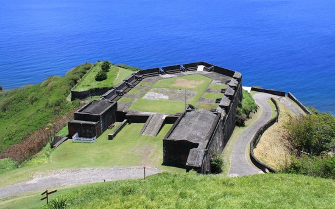
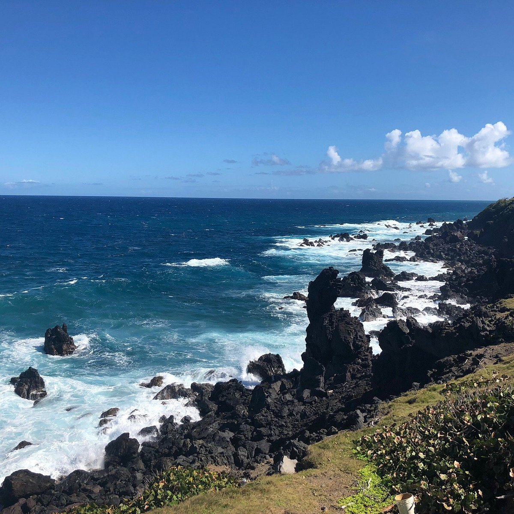
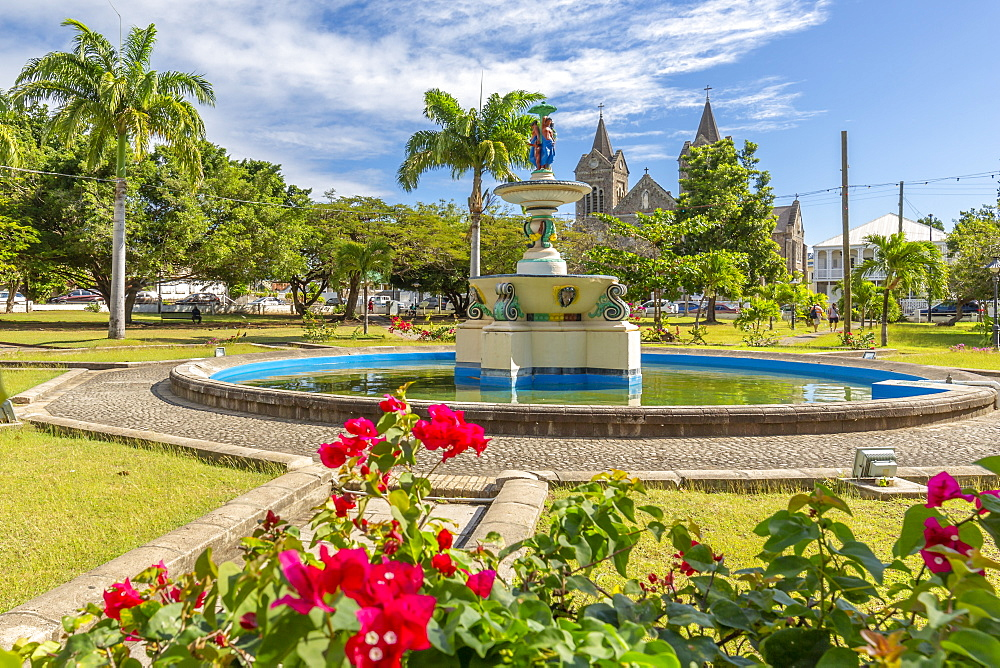
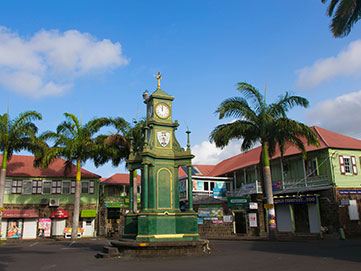
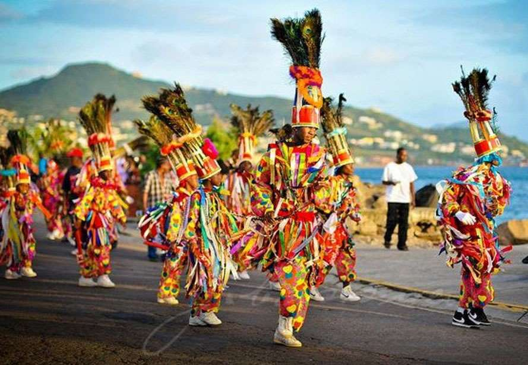
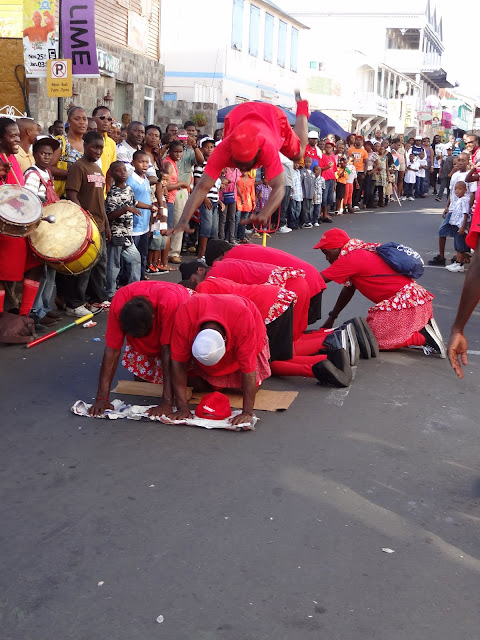
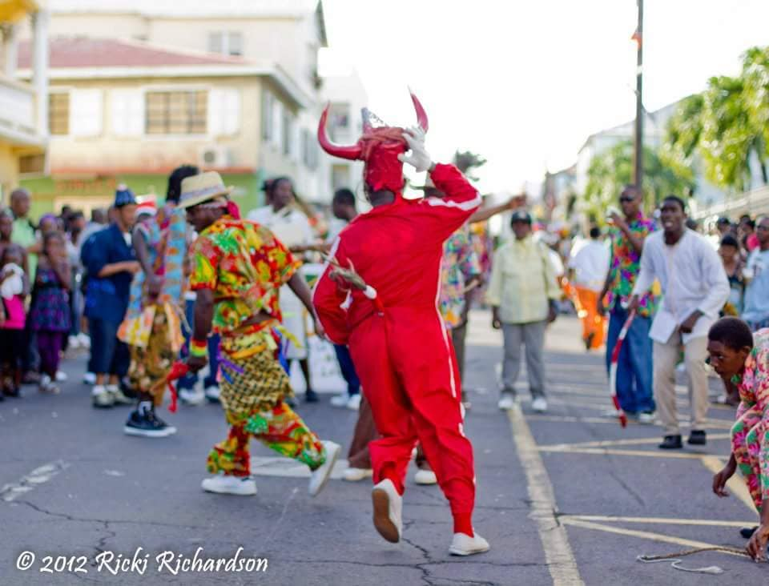

Saint Kitts and Nevis is a dual-island nation situated between the Atlantic Ocean and Caribbean Sea. It's known for cloud-shrouded mountains and beaches. Many of its former sugar plantations are now inns or atmospheric ruins. The larger of the 2 islands, Saint Kitts, is dominated by the dormant Mount Liamuiga volcano, home to a crater lake, green vervet monkeys and rainforest crisscrossed with hiking trails.
| Brimestone Hill |
 |
|---|---|
| Black Rocks |
 |
| Independence square |
 |
| Berkley Memorial |
 |
| Mount Liamigua |
 |
| Sugar Mas |
 |
|---|---|
| Masquerade |
 |
| Clown |
 |
| Actors |
 |
| The Bull |
 |
Things to do
Eco Park
This eco-Park is Taiwan-financed greenhouse and garden compound, which has the objective of teaching about sustainable cultivation and gardening. The greenhouse is 24 meters high and extends over 14,000 square feet, making it the biggest greenhouse in the Caribbean. It houses a big number of plants, incorporating native medicinal herbs, butterfly orchids, and roses. The Eco-Park has a fascinating labyrinth made of trees that are formed like the maps of St. Kitts and Taiwan. No surprise, the native people mention the park “Little Taiwan” and now it’s one of the best tourist attractions in St. Kitts and Nevis.
Scenic Railway
This distinctive railway line will lead you on a 3-hour tour along the shore of St Kitts on a slender gauge trail of 762 mm.It is most Tourist Attractions in Saint Kitts and Nevis This distinctive and wonderful tour makes a 30-mile-long ring around the island, embracing the northeastern shoreline, providing breathtaking views of the Caribbean as well as coasts, surf, sheer cliffs, and lush greeneries. The train unhurriedly races along lofty steel bridges across deep canyons, through little villages and farms, and through rich, mystifying green rainforests surrounded by miles of sugar cane, with the menacing silhouette of the Mount Liamuiga volcanic cone.
Sky Safari Tours
This zip line adventure trip will make you see the neighboring rainforest from a very uncommon point of view – above the canopy. From one of the Sky Safari’s five zip lines, with the prolonged extension of 1,350 feet; you will get a sweeping view of many types of trees that constitute the thriving rainforest. You will also be able to find the neighboring historic spots and surrounding islands while flying through the air at up to 80 kilometers per hour. Each line is situated strategically to provide riders the chance to find a separate look. The total zip line system is state of the art and the feeling is, while spectacular, totally secure.